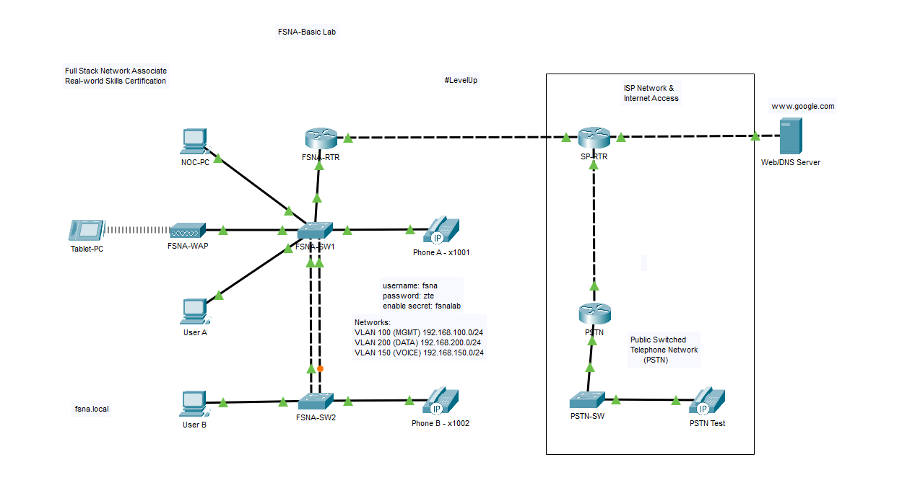

Full Stack Network Associate Project

Objectives
- User A, User B, Phone A and Phone B should all receive an IP address from one of the DHCP Pools.
- All PCs and the Tablet must be able to ping each other and browse to the Web Server.
- Phone A and B must be able to dial and ring each other.
Tasks
- Cable the devices using the appropriate cable type.
- Configure FSNA-SW1 and FSNA-SW2.
- Configure FSNA-RTR (Router-on-a-Stick, DHCP pool - Data VLAN, Static Default Route and Ephones).
- Configure SSID and PSK on FSNA-WAP and the Tablet.
- Verify host devices have received IP addresses.
- Verify network connectivity to the Web Server.
- Verify IP Phones have registered with the router - and can call each other.